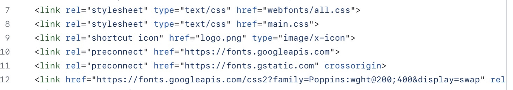

Сазончик Анастасія Жоржівна
Бригада№ 25
IO-03

Дзюба Олег Глібович
Бригада№ 25
IO-04

Когай Ірина Миколаївна
Бригада№ 25
IO-05
Бригада№ 25
IO-03
Бригада№ 25
IO-04
Бригада№ 25
IO-05
Структура HTML-документа. Вибір предметної галузі. Робота з посиланнями, таблицями, зображеннями, списками в HTML-документі.
Придбати практичні навички роботи з HTML-документом, таблицями, зображеннями, посиланнями, списками, формами. Створити шаблон звітного HTML-документом для відображення результатів роботи всіх лабораторних робіт.
Даний проект створений для того, щоб допомогти користувачам контролювати свої фінанси. Предметне середовище проекту передбачає наявність різноманітних фінансових операцій, що можуть бути пов'язані з різними сферами життя користувачів, такими як особисті доходи та витрати, бізнес-фінанси, інвестиції тощо. Управління фінансовими операціями є важливим елементом життєвої діяльності кожної людини та організації, тому наш проект може бути корисним для широкої аудиторії.
Зовнішні стилі: Створили окремий файл зі стилями CSS і підключили його до сторінки за допомогою тегу link:
CDN (Content Delivery Network): Використали CDN-сервіси, підключили стилі до нашої сторінки за допомогою URL-адреси:
Селектор тега - це спосіб вибору елементів на веб-сторінці за їхнім тегом. Він записується з використанням імені тега без будь-яких додаткових символів.
main{
width: 85%;
height: 100%;
position: absolute;
top: auto;
left: 15%;
display:flex;
flex-wrap: wrap;
flex-direction: column;
}
i {
font-size: 0.75em;
}
nav {
width: 20%;
}
aside {
background-color: black ;
height: 100%;
width: 20%;
position: absolute;
}
Селектор класу - це спосіб вибору елементів на веб-сторінці за їхнім класом. Він записується з використанням крапки перед ім'ям класу.
.categories {
color: white;
font-size: 1.5em;
font-weight: 300;
position: absolute;
left: 10%;
top: 3%;
list-style: none;
margin: 0;
padding: 0;
}
.categories li a, .categories li {
padding: 20px 0;
}
.main-slide li a, .main-slide li {
padding: 20px 0;
}
.category {
cursor: pointer;
}
.expand {
margin-left: 10px;
transition: transform 0.3s ease;
}
.subcategories {
max-height: 0;
overflow: hidden;
margin: 0;
padding: 0;
transition: max-height 0.5s ease-out;
}
.subcategories li {
padding-left: 20px;
}
/* End of list in aside */
.section1{
background-color: white;
width: 29.9%;
height: 100%;
border-right-style: solid;
border-right-width: 1px;
border-right-color: #dbdbdb;
}
.main-slide {
max-height: 90%;
overflow-y: auto;
}
.main-slide::-webkit-scrollbar {
display: none;
}
.Name {
width: 30%;
padding: 0%;
}
.Amount {
width: 30%;
padding: 0%;
}
.Image {
width: 15%;
padding: 0%;
}
.subcategory{
display: flex;
flex-direction: row;
align-items: center;
}
.mini-card{
font-size: 40%;
border-radius: 5px;
color: white;
position: relative;
background: linear-gradient(to right, #f6e58d, #ffbe76);
color: #000000;
}
.mini-card__logo{
position: relative;
left: 10%;
}
.mini-card__number{
position: relative;
left: 5%;
}
.mini-card__name{
position: relative;
left: 10%;
}
.mini-card__expiry{
position: relative;
left: 10%;
}
.button {
background-color: #ffbe76;
border: 0;
border-radius: 10px;
padding: 10px 20px;
color: black;
font-size: 1.3em;
font-weight: 500;
font-variant: small-caps;
text-align: center;
list-style: none;
text-decoration: none;
box-shadow: 2px 2px 4px rgba(0, 0, 0, 0.3);
position: absolute;
top: 90%;
right: 80%;
}
.section2 {
background-color: #000000;
width: 70%;
height: 40%;
display: flex;
flex-direction: column;
}
.card {
width: 30%;
height: 60%;
margin-top: 3%;
margin-right: 10%;
margin-bottom: 10%;
border-radius: 15px;
padding: 20px;
position: relative;
transition: transform 1s;
transform-style: preserve-3d;
background-color: black;
}
.card.is-flipped {
transform: rotateY(180deg);
}
.card__front, .card__back {
border-radius: 15px;
position: absolute;
top: 0;
left: 0;
width: 100%;
height: 100%;
backface-visibility: hidden;
}
.card__front {
background: linear-gradient(to right, #f6e58d, #ffbe76);
}
.card__back {
background:#ffbe76;
transform:
rotateY(180deg);
}
.card__logo {
font-size:24px;
position:absolute;
top:20px;
left:20px;
}
.card__number {
font-size:20px;
letter-spacing:2px;
position:absolute;
top:45%;
left:20%;
}
.card__name,
.card__expiry {
font-size:16px;
}
.card__name {
position:absolute;
bottom:20px;
left:20px;
}
.card__expiry {
position:absolute;
bottom:40px;
left:20px;
}
.card__cvv {
font-size:24px;
position:absolute;
top:80%;
left:80%;
transform:translate(-50%,-50%);
}
.fa-ellipsis{
font-size: 100%;
}
.section3{
width: 70%;
height: 30%;
display: flex ;
flex-direction: row;
}
.section3_1{
width: 50%;
height: 100%;
}
.spendings-container{
display:flex;
flex-direction: column;
height: 80%;
width: 80%;
position: relative;
top: 10%;
left:10%
}
.columns-container{
display:flex;
flex-direction: row;
justify-content: space-between;
align-items: flex-end;
height: 50%;
position: relative;
}
.columns{
display:flex;
flex-direction: row;
justify-content: space-between;
align-items: flex-end;
height: 100%;
width: 8%;
}
.column{
height: 100%;
width: 35%;
border-radius: 5%;
}
.column.last-week{
background-color: rgb(212, 212, 212);
}
.column.this-week{
background-color: #ffbe76;
}
.sun.column.this-week{
height: 100%;
}
.sun.column.last-week{
height: 50%;
}
.mon.column.this-week{
height: 80%;
}
.mon.column.last-week{
height: 70%;
}
.tue.column.this-week{
height: 90%;
}
.tue.column.last-week{
height: 75%;
}
.wed.column.this-week{
height: 40%;
}
.wed.column.last-week{
height: 55%;
}
.thur.column.this-week{
height: 65%;
}
.thur.column.last-week{
height: 85%;
}
.fri.column.this-week{
height: 10%;
}
.fri.column.last-week{
height: 40%;
}
.sat.column.this-week{
height: 5%;
}
.sat.column.last-week{
height: 45%;
}
.section3_2{
width: 50%;
height: 100%;
border-left-style: solid;
border-left-width: 1px;
border-left-color: #dbdbdb;
}
.categories-container{
display:flex;
flex-direction: column;
height: 80%;
width: 80%;
position: relative;
top: 10%;
left:10%
}
.categories-text{
height: 25%;
}
.categories-diagram{
height: 2.5%;
display: flex;
flex-direction: row;
gap: 5px;
}
.diagram.Supermarkets{
width: 31%;
background-color:#F24726;;
}
.diagram.Medicine{
width: 16%;
background-color:#FAC710;
}
.diagram.Clothes-and-Shoes{
width: 12%;
background-color:#9510AC;
}
.diagram.Fast-food{
width: 9%;
background-color:#414BB2;
}
.diagram.Petrol{
width: 8%;
background-color:#2D9BF0;
}
.diagram.Entertainment{
width: 7%;
background-color:#8FD14F;
}
.diagram.Beauty{
width: 5%;
background-color:#CEE741;
}
.diagram.Other{
width: 12%;
background-color:#808080;
}
.categoies-comments{
height: 65%;
display: flex;
align-content: space-around;
gap: 10px;
flex-wrap: wrap;
position: relative;
top: 5%;
}
.comment{
border-style: solid;
border-radius: 5%;
border-width: 1px;
border-color: #dddddd;
padding: 1%;
}
.section4{
width: 70%;
height: 29.89%;
margin-top: auto;
margin-left: auto;
border-top-style: solid;
border-top-width: 1px;
border-top-color: #dbdbdb;
}
Селектори ідентифікатора в CSS використовуються для стилізації конкретних елементів HTML на основі їхніх унікальних ідентифікаторів. Ідентифікатор елемента задається в HTML за допомогою атрибута 'id'
#section2-1{
display: flex;
justify-content: flex-end;
height: 80%;
}
#card-info{
width: 52%;
display: flex;
flex-direction: column;
}
#amount{
color: white;
font-size: 200%;
}
#buttons{
height: 20%;
}
#income-outcome{
height: 10%;
}
#income-amount-outcome-amount{
}
#transfer{
color: white;
background-color: #222222;
border: none;
border-radius: 5px;
box-shadow: none;
height: 60%;
width: 30%;
position: relative;
top: 0%;
}
#request{
color: white;
background-color: #222222;
border: none;
border-radius: 5px;
box-shadow: none;
height: 60%;
width: 30%;
position: relative;
}
#income{
color: rgb(226, 226, 226);
width: 30%;
height: 10%;
margin: 0;
position: relative;
}
#income-amount{
color: white;
font-size: 130%;
width: 30%;
height: 10%;
margin: 0;
position: relative;
}
#outcome{
color: rgb(226, 226, 226);
width: 30%;
height: 10%;
margin: 0;
position: relative;
left: 25%;
}
#outcome-amount{
color: white;
font-size: 130%;
width: 30%;
height: 10%;
margin: 0;
position: relative;
left: 19.5%;
}
За допомогою селектора групи ви можете застосувати один і той самий набір стилів до кількох елементів.
ul, li {
list-style: none;
}
html, body {
width: 100%;
height: 100%;
margin: 0;
}
.categories li a, .categories li {
padding: 20px 0;
}
.main-slide li a, .main-slide li {
padding: 20px 0;
}
Складовий селектор (compound selector), який об'єднує в собі селектори ідентифікатора і тега.
#section2-2 button{
color: rgb(226, 226, 226);
background-color: #000000;
border-top: none;
border-bottom: none;
border-left: none;
box-shadow: none;
font-size: 110%;
height: 40%;
width: 17%;
position: relative;
top: 30%;
}
#table-scroll::-webkit-scrollbar {
display: none;
}
В CSS частині знаходяться стилі, які використовуються для відображення структури на сторінці. Використовується багато стилів, таких як вирівнювання, розміри, колір, шрифт, фон, рамки та інші. Код також містить класи і ідентифікатори, які допомагають звертатися до певних елементів і застосовувати до них стилі.
Ми використали селектори для вибору елементів, до яких будуть застосовуватися стилі. У цьому коді використовуються класи, ID та елементні селектори. Наприклад, .header вибирає всі елементи з класом "header" для застосування стилів.
Також використовуються псевдокласи та псевдоелементи, які дозволяють застосовувати стилі до певних станів елементів (наприклад, :hover для стану "наведення" на елемент).
Усі ці елементи дозволяють задати детальний вигляд та поведінку елементів на сторінці.
Наш веб-проект "Застосунок обліку фінансів" успішно вирішує завдання автоматизації обліку фінансових операцій. Проект має простий та зручний інтерфейс, що дозволяє легко та швидко здійснювати операції з фінансами. В проекті реалізовані всі необхідні функції для додавання, редагування та видалення операцій, а також можливість генерування звітів за різними параметрами. Було використано сучасні технології, такі як HTML, CSS, JavaScript для побудови клієнтської частини проекту, зі стэком FastApi + Vue3.js для побудови серверної частини. Проект має добру структуру та кодування, що сприяє легкому розширенню та підтримці в майбутньому. Загалом, наш проект є ефективним та корисним інструментом для обліку фінансів, що забезпечує зручність та ефективність в управлінні фінансовими операціями.
Цей проект містить стильну та добре організовану CSS-структуру, що дозволяє легко керувати виглядом та розміщенням елементів на сторінці. В CSS було використано різноманітні селектори та властивості, щоб досягти бажаного вигляду для кожного елемента. Всі властивості та класи CSS були документовані для забезпечення зрозумілості та підтримки коду в майбутньому. Загалом, CSS в цьому проекті є добре організованим та оптимізованим, що забезпечує високу якість та ефективність веб-додатка.